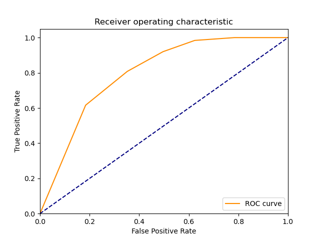

| 6 |
NonLinearSVM |
Non Linear Support Vector Classification |
0.015622 |
0.015625 |
117 |
65 |
60 |
8 |
0.936 |
0.520 |
0.661017 |
0.728 |
0.272 |
0.774834 |
1.039566 |
49.599243 |
49.590161 |
|
 |
|
| 7 |
LP |
Linear perceptron classifier |
0.000000 |
0.000000 |
100 |
82 |
43 |
25 |
0.800 |
0.656 |
0.699301 |
0.728 |
0.272 |
0.746269 |
1.029111 |
inf |
inf |
 |
 |
 |
| 9 |
AdaBoostClassifier |
An AdaBoost classifier |
0.265959 |
0.000000 |
113 |
66 |
59 |
12 |
0.904 |
0.528 |
0.656977 |
0.716 |
0.284 |
0.760943 |
1.013082 |
2.861128 |
inf |
|
 |
|
| 4 |
KNeighborsClassifier |
Classifier implementing the k-nearest neighbors vote |
0.000000 |
0.015623 |
115 |
63 |
62 |
10 |
0.920 |
0.504 |
0.649718 |
0.712 |
0.288 |
0.761589 |
1.006589 |
inf |
48.746929 |
|
|
 |
| 5 |
LinearSVM |
Linear Support Vector Classification |
0.078117 |
0.000000 |
113 |
63 |
62 |
12 |
0.904 |
0.504 |
0.645714 |
0.704 |
0.296 |
0.753333 |
0.990276 |
9.643638 |
inf |
|
|
|
| 8 |
MLP |
Multi-layer Perceptron classifier. |
0.765460 |
0.000000 |
98 |
77 |
48 |
27 |
0.784 |
0.616 |
0.671233 |
0.700 |
0.300 |
0.723247 |
0.972080 |
0.944852 |
inf |
|
|
|
| 2 |
BernoulliNBC |
Naive Bayes classifier for multivariate Bernoulli models |
0.000000 |
0.000000 |
109 |
61 |
64 |
16 |
0.872 |
0.488 |
0.630058 |
0.680 |
0.320 |
0.731544 |
0.945278 |
inf |
inf |
 |
 |
 |
| 1 |
RealBoost |
An RealBoost classifier |
1.125290 |
0.000000 |
104 |
64 |
61 |
21 |
0.832 |
0.512 |
0.630303 |
0.672 |
0.328 |
0.717241 |
0.928129 |
0.637384 |
inf |
 |
 |
|
| 10 |
GradientBoostingClassifier |
An GradientBoost classifier |
0.453064 |
0.000000 |
105 |
59 |
66 |
20 |
0.840 |
0.472 |
0.614035 |
0.656 |
0.344 |
0.709459 |
0.903631 |
1.565915 |
inf |
 |
|
 |
| 3 |
GaussianNBC |
Gaussian Naive Bayes (GaussianNB) |
0.000000 |
0.000000 |
108 |
30 |
95 |
17 |
0.864 |
0.240 |
0.532020 |
0.552 |
0.448 |
0.658537 |
0.771285 |
inf |
inf |
 |
 |
 |
| 0 |
DiscreteNBC |
DiscreteNBC |
0.078147 |
0.031248 |
60 |
61 |
64 |
65 |
0.480 |
0.488 |
0.483871 |
0.484 |
0.516 |
0.481928 |
0.628349 |
6.166924 |
15.422628 |
 |
 |
 |
{kind=link}
{kind=link}
{kind=link}
{kind=link}
{kind=link}
{kind=link}
{kind=link}
{kind=link}
{kind=link}
{kind=link}
{kind=link}
{kind=link}
{kind=link}
{kind=link}
{kind=link}